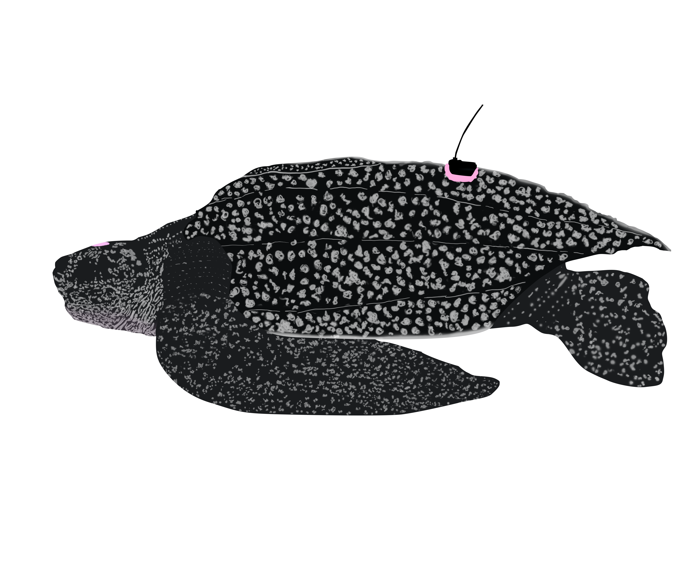

Get in touch!

I'm a GIS enthusiast working at the intersection of geospatial technology and environmental conservation, with experience ranging from public service, to conservation GIS, to field research and marine science. I have a broad technical skillset in spatial analysis, data visualization, and web application development. I enjoy working on teams and using creative critical thinking to solve complex problems, and I'm passionate about helping people understand and communicate their data - from government agencies, to research teams, to individuals. The portfolio displayed here highlights some of the roles that I've worked in over the years and the projects I've worked on. I'd love to connect if you have similar interests or would like to talk more!
Click to view full screen, or download the CV (PDF).